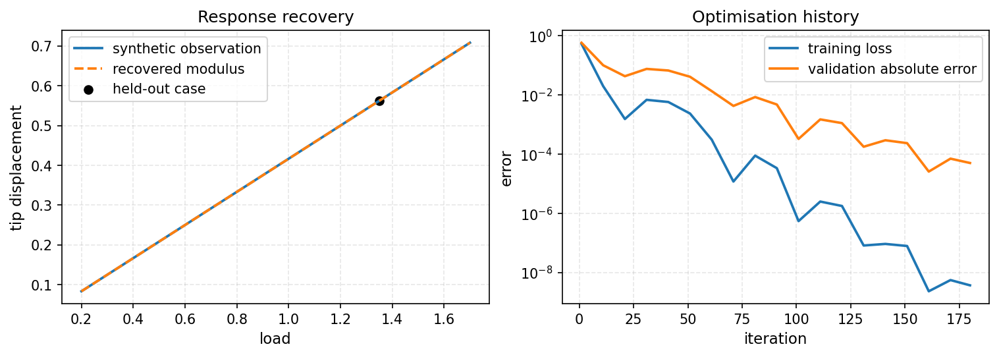

Lab 03: Differentiable Mechanics & Inverse Parameter Identification#
Learning objective. Formulate a forward mechanics problem in PyTorch, differentiate through the finite-element linear solve, verify the sensitivities against finite differences, and use gradient descent to solve an inverse problem recovering an unknown material stiffness parameter.
Predict first. For a fixed positive load, predict the sign of \(\mathrm{d}u_{\mathrm{tip}}/\mathrm{d}E\). Also predict whether the notebook’s \(\exp(\mathrm{log\_E})\) parameterisation imposes an upper bound on the modulus.
Follow the worked calculation, then use the downloadable notebook to explore the exercises.
In engineering inverse problems, we frequently observe boundary measurements (such as displacements or reaction forces) and wish to infer unknown material parameters (such as Young’s modulus \(E\) or toughness \(G_c\)).
In this tutorial, we:
Model a one-dimensional elastic bar governed by \(\frac{d}{dx}\left(E \frac{du}{dx}\right) + f = 0\).
Parameterize the unknown modulus using an unconstrained log-modulus representation \(E = \exp(\theta)\) to ensure strict positivity (\(E > 0\)).
Compute the sensitivity of the mean-squared tracking loss \(J(E) = \frac{1}{m}\sum_{i=1}^{m}[u_{\mathrm{tip}}(E,F_i)-u_i^\star]^2\) using PyTorch automatic differentiation, where \(m=4\) training loads provide the observed tip displacements.
Recover the true material parameter \(E^\star\) using gradient descent.
{'environment': 'local', 'python': '3.10.18', 'course_revision': '077d43d87c55b4fdea720808fc24f040e957e1ea', 'versions': {'torch': '2.8.0', 'numpy': '2.2.6', 'scipy': '1.14.1', 'matplotlib': '3.10.8', 'nbformat': '5.10.4'}, 'setup_seconds': 0.014}
torch.manual_seed(20260909)
n_elements, length, area = 40, 1.0, 1.0
h = length / n_elements
# Unit-modulus stiffness. E remains a differentiable scalar multiplier.
K0 = torch.zeros((n_elements + 1, n_elements + 1), dtype=torch.float64)
local = torch.tensor([[1.0, -1.0], [-1.0, 1.0]], dtype=torch.float64) * area / h
for e in range(n_elements):
K0[e:e+2, e:e+2] += local
def tip_displacement(E, load):
K_free = (E * K0)[1:, 1:]
force = torch.zeros(n_elements, dtype=torch.float64)
force[-1] = load
return torch.linalg.solve(K_free, force)[-1]
E_probe = torch.tensor(1.8, dtype=torch.float64, requires_grad=True)
u_probe = tip_displacement(E_probe, 1.1)
(du_dE_ad,) = torch.autograd.grad(u_probe, E_probe)
h_fd = 1.0e-6
du_dE_fd = (tip_displacement(E_probe.detach() + h_fd, 1.1) - tip_displacement(E_probe.detach() - h_fd, 1.1)) / (2*h_fd)
du_dE_exact = -u_probe.detach() / E_probe.detach()
print({"u_tip": float(u_probe.detach()), "AD": float(du_dE_ad), "FD": float(du_dE_fd), "analytic": float(du_dE_exact)})
assert abs(float(du_dE_ad - du_dE_exact)) < 1.0e-12
assert abs(float(du_dE_fd - du_dE_exact)) < 1.0e-8
{'u_tip': 0.6111111111111187, 'AD': -0.33950617283949214, 'FD': -0.3395061727862192, 'analytic': -0.3395061728395104}
# Whole load cases are kept separate: train, validation, and held-out.
E_true = torch.tensor(2.4, dtype=torch.float64)
train_loads = torch.tensor([0.35, 0.75, 1.15, 1.55], dtype=torch.float64)
validation_load = torch.tensor(0.95, dtype=torch.float64)
heldout_load = torch.tensor(1.35, dtype=torch.float64)
observed_train = torch.stack([tip_displacement(E_true, load) for load in train_loads]).detach()
observed_validation = tip_displacement(E_true, validation_load).detach()
observed_heldout = tip_displacement(E_true, heldout_load).detach()
log_E = torch.nn.Parameter(torch.log(torch.tensor(0.9, dtype=torch.float64)))
optimiser = torch.optim.Adam([log_E], lr=0.08)
history = []
for iteration in range(180):
optimiser.zero_grad(set_to_none=True)
E_trial = torch.exp(log_E)
predicted = torch.stack([tip_displacement(E_trial, load) for load in train_loads])
loss = torch.mean((predicted - observed_train) ** 2)
loss.backward()
optimiser.step()
if iteration % 10 == 0 or iteration == 179:
with torch.no_grad():
val_error = abs(tip_displacement(torch.exp(log_E), validation_load) - observed_validation)
history.append((iteration + 1, float(torch.exp(log_E).detach()), float(loss.detach()), float(val_error)))
E_fit = torch.exp(log_E).detach()
heldout_prediction = tip_displacement(E_fit, heldout_load)
print({"E_true": float(E_true), "E_fit": float(E_fit), "heldout_observed": float(observed_heldout), "heldout_prediction": float(heldout_prediction)})
assert abs(float(E_fit - E_true)) < 2.0e-3
{'E_true': 2.4, 'E_fit': 2.400302387627723, 'heldout_observed': 0.562499999999992, 'heldout_prediction': 0.5624291368281488}
history_array = np.array(history)
response_loads = torch.linspace(0.2, 1.7, 80, dtype=torch.float64)
true_response = np.array([float(tip_displacement(E_true, load)) for load in response_loads])
fit_response = np.array([float(tip_displacement(E_fit, load)) for load in response_loads])
fig, axes = plt.subplots(1, 2, figsize=(10, 3.5), constrained_layout=True)
axes[0].plot(response_loads, true_response, label="synthetic observation")
axes[0].plot(response_loads, fit_response, "--", label="recovered modulus")
axes[0].scatter([heldout_load], [observed_heldout], color="black", label="held-out case")
axes[0].set(xlabel="load", ylabel="tip displacement", title="Response recovery")
axes[0].legend()
axes[1].semilogy(history_array[:, 0], history_array[:, 2], label="training loss")
axes[1].semilogy(history_array[:, 0], history_array[:, 3], label="validation absolute error")
axes[1].set(xlabel="iteration", ylabel="error", title="Optimisation history")
axes[1].legend()
fig.savefig(assets_dir() / "tiny_inverse_bar.png", dpi=160, bbox_inches="tight")
display_figure(fig, alt="Toy elastic-bar response recovery and optimisation history.")
plt.close(fig)

Compare the recovered modulus and held-out displacement with their reference values. The analytic bar sensitivity helps explain the agreement between automatic differentiation and finite differences. Extending the calculation to fracture introduces a load-dependent history, irreversibility constraints and sensitivity to the chosen observations and solver tolerance.
Key takeaways#
The elastic-bar response connects stiffness, load and displacement through equilibrium.
Reverse-mode differentiation propagates a scalar observation or loss back to the chosen parameter.
Optimising \(\log E\) keeps the recovered modulus positive.
A held-out displacement tests the recovered parameter on an additional observation.
Exercises#
Try each question before opening the hint or worked solution. Keep the original calculation as your reference.
Exercise 1: Derive the tip sensitivity#
The fixed-left, unit-length, unit-area bar has a tip load \(F\) and a uniform modulus \(E\).
Derive \(u_{\mathrm{tip}}(E,F)\) and \(\mathrm{d}u_{\mathrm{tip}}/\mathrm{d}E\).
Evaluate both at \(E=1.8\) and \(F=1.1\).
Compare with the notebook’s autograd and centred-FD values.
Hint 1
For a uniform axial bar, the series assembly gives \(u_{\mathrm{tip}}=FL/(EA)\). Here \(L=A=1\).
Worked solution 1
For a uniform bar,
With \(L=A=1\), \(F=1.1\) and \(E=1.8\), the tip displacement is approximately \(0.611\) and the sensitivity is approximately \(-0.340\). A stiffer bar stretches less under the same load. Compare the analytic and computed sensitivities using the relative error and the sign; vary the finite-difference spacing to assess its numerical accuracy.
Exercise 2: Explore positive stiffness and additional observations#
Let \(z=\log E\). Derive \(\partial u_{\mathrm{tip}}/\partial z\) from the chain rule. What values of stiffness can this parameterisation represent?
Use
tip_displacementto compare the recovered and reference bar over several positive loads. Plot both responses and their difference.Explain what an additional load observation tests in this linear bar model. What extra experiment would help if the material response were nonlinear?
Hint 2
Use \(\partial E/\partial z=E\) and the sensitivity from Exercise 1. The notebook supplies E_fit, E_true and the callable tip_displacement.
Worked solution 2
The exponential maps each real \(z\) to a positive stiffness. Applying the chain rule gives
loads = torch.linspace(0.2, 1.5, 12, dtype=torch.float64)
with torch.no_grad():
reference = torch.stack([tip_displacement(E_true, force) for force in loads])
recovered = torch.stack([tip_displacement(E_fit, force) for force in loads])
fig, axes = plt.subplots(1, 2, figsize=(8.5, 3.2), layout="constrained")
axes[0].plot(loads, reference, label="reference")
axes[0].plot(loads, recovered, "--", label="recovered")
axes[0].set(xlabel="tip load F", ylabel="tip displacement")
axes[0].legend()
axes[1].plot(loads, recovered - reference)
axes[1].set(xlabel="tip load F", ylabel="displacement difference")
display_figure(fig)
Both curves are straight lines in this uniform linear-elastic model. An additional load tests the recovered compliance on another observation, while repeated noisy measurements help quantify uncertainty. A nonlinear material would require observations spanning the relevant strain range; unloading measurements could also reveal irreversible response.